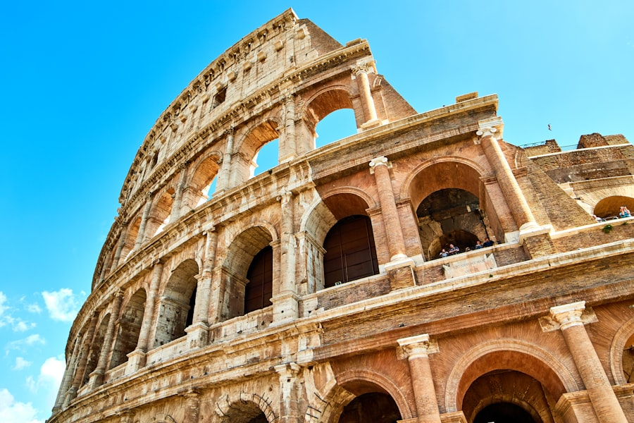

⏱ צ׳יוויטווקיה→רומא בואן: ~1–1.5 שעות
רומא — לילה אחרון
חוזרים מהנמל למלון (ראו השוואת מלונות). ערב קל במרכז — בלי אטרקציות כבדות.
הזמינו העברה ל־FCO למחר ל־07:00–07:15.
מדריך החופשה · רומא · Legend of the Seas · 14–25 בספטמבר 2026
חמישי · ירידה ~07:00 · לילה אחרון

חוזרים מהנמל למלון (ראו השוואת מלונות). ערב קל במרכז — בלי אטרקציות כבדות.
הזמינו העברה ל־FCO למחר ל־07:00–07:15.
השוואת מלונות לילה אחרון — המלצה: Repubblica / Via Nazionale עם מעלית.
פירוט לכל היעדים: עמוד מוניות בטוחות
| אפשרות | מה כולל | עלות משוערת ליום (משפחה ×4) |
|---|---|---|
| A ★ | העברה פרטית → מלון → מנוחה → טרווי/ספניש סטפס קל | €200–300 (העברה מהנמל €120–180 + ערב אוכל קל €80–120) |
| B | כמו A + קניות אחרונות | €220–380 (A + קניות לפי בחירה) |
| C | טיול יום למקום אחר | €250–450 (לא מומלץ לפני טיסה) |
מחירים משוערים באירו ליום שלם למשפחה — לא כוללים טיסות/מלון/חבילת השייט עצמה, אלא מה שמשלמים באותו יום לפי האפשרות. לעדכון לפני הנסיעה.